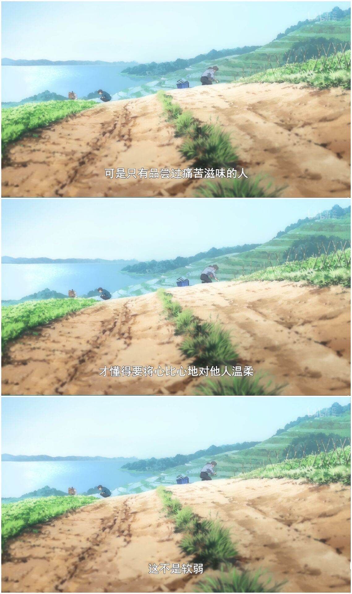
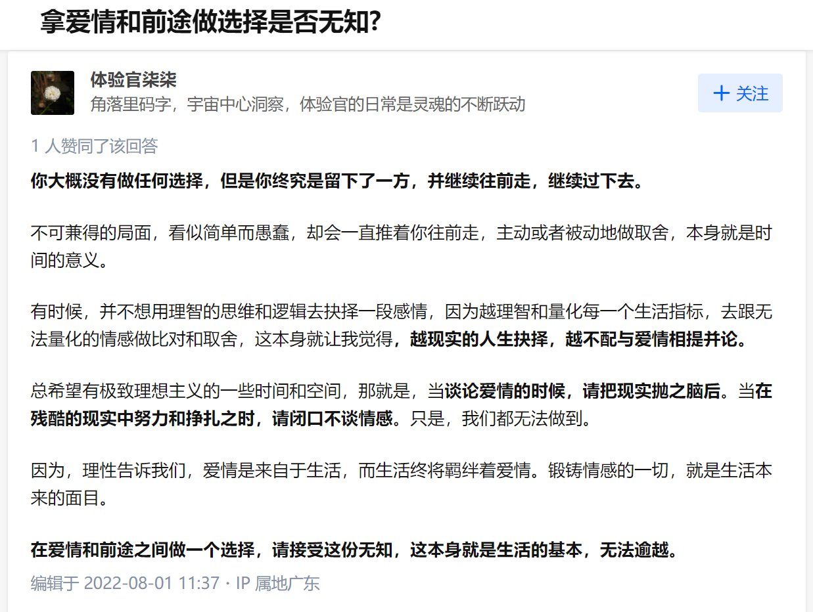
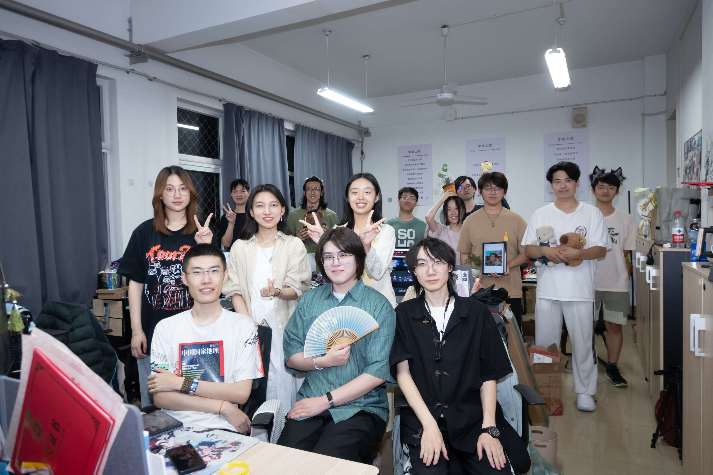

置顶-因你而在的故事
因你而在的故事
2023.6 当我透过学线办公室窗外望去，高楼与山丘，夕阳落日，无限风光，又与何人说。
心灵鸡汤
举头望明月，万般感怀皆在其中， 此情此景，犹如天星照我，愿逐月华。
I go through that so much. I doubt myself every single day. No matter what happens, I continue to doubt myself. And I think I always will and I think it’s always something I’m gonna struggle with. But this song helped me, and helps me moment to moment. I don’t think we can ever hope to fully get over the things that makes us insure, or the voices in our head that say “You can’t do it. You are not good enough. Nobody likes you. You are so annoying.”…
--Bilibili BV1hY4y167dk Taylor Swift & Mary J Blige

碎碎念
2022.6.10
高考两周年了，心里总是很怀念从前。晚上梦到自己获得了自己曾经失去的很多东西，但也失去了很多自己非常珍重的东西，一时之间竟不知是该喜还是该悲。我常常回忆起往昔的岁月，那时的我们有着共同的理想，能同甘，也能共苦，而如今，熙熙攘攘，不过皆是匆匆过客。
有时我也曾回忆自己走过的漫漫路程，深感无奈，我们走上并非我们所选择的舞台，演出并非我们所选择的剧本，在深夜无助之时我也曾怀疑自己这一路走来究竟意义何在，也曾怀疑自己当初的选择是否正确，然而，随着时间的流逝我们终将失去很多珍贵的东西，那不是我们的意志所能改变的，我们只是活在，活好当下。
有时在梦里我向我所见之人求助，希望他们能在我迷茫之时给我的人生一些指引，但最终我终会意识到，我只不过是在叩问自己的内心，下一步该如何走。我并不认为有人能将自己的人生规划地完美，至少我不会是这样。我的人生已经有太多遗憾，虽然有时这些遗憾也是一份新的契机，但终究是一块抚不平的伤疤，有时我也试图能给自己的人生足够明确的指引但最终发现这样做不过是徒劳，我并不喜欢见异思迁但时间总会带来太多变数。不过这并不会阻挡我向前看，纵有层层迷雾笼罩，我也希望能在迷雾之中找出未来的方向，哪怕这个所谓的未来，仅限于明天。
2022.6.19
为什么越努力，越焦虑？
没有上限的目标让我们焦虑不已，将努力视为手段，而非目标。我们需要的是具体而确切的短期目标。
2022.6.30
我患得患失，太在意从前，又太担心将来。
2022.8.6

2023.6.20
博客1000K字留念
这是博客的第631天，是我大学第四个年头的末尾。
三年寒暑，又历春秋，新朋旧友，悲欢离合，从花哨到精致，逝去的又不知是谁的青春。
我常在雨中赶路，难免被雨水迷住眼睛，有许多次，几乎看不清前方，终有一日抵达了山巅，自顶峰望去，云在脚下，耳畔唯有清风袅袅，真正的高山，真正的空明澄澈之心，无我，无恨，无念，无怨，踏上旅途吧，我即是清风，再长的路也会有相遇，人生尚未结束，何处不是故乡。
2023.6.25
办公室抽象实景：
2024.5
想不到这篇帖子再次更新时，时光已然跨越了近乎一年，如今我也迎来了四年的终章，恍然如梦一场
